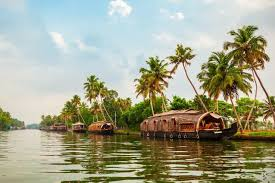
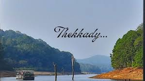

Famous Tourist Spots
1. Munnar

Munnar is a scenic hill station located in the Western Ghats. It is known for its green tea plantations, cool weather and mountain views. Activities include trekking, tea factory visit, eco point and boating.
2. Alleppey (Alappuzha)
Known as the "Venice of the East," Alleppey is famous for backwater cruises, houseboats and traditional Kerala food served on banana leaves. The peaceful water bodies make it perfect for relaxation.
3. Kovalam Beach

Kovalam is one of the most popular beaches in Kerala. Tourists enjoy sunbathing, swimming, surfing and watching sunsets. Lighthouse beach is a major attraction here.
4. Wayanad

A beautiful district filled with forests, waterfalls and wildlife. Popular activities include trekking to Chembra Peak, visiting Edakkal Caves and enjoying scenic viewpoints.
5.Tekkady
Home to Periyar Wildlife Sanctuary. Elephant safaris, boating and spice farms attract nature lovers and wildlife photographers.